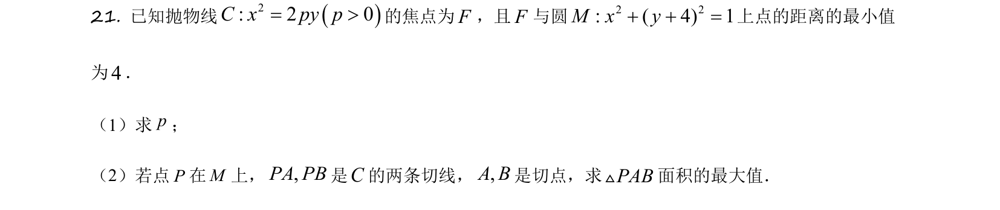
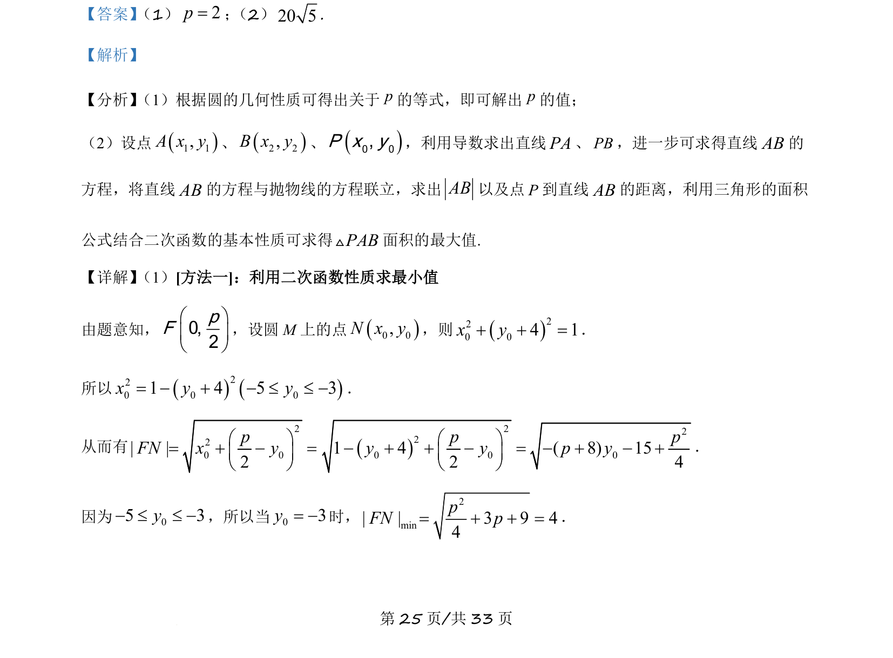
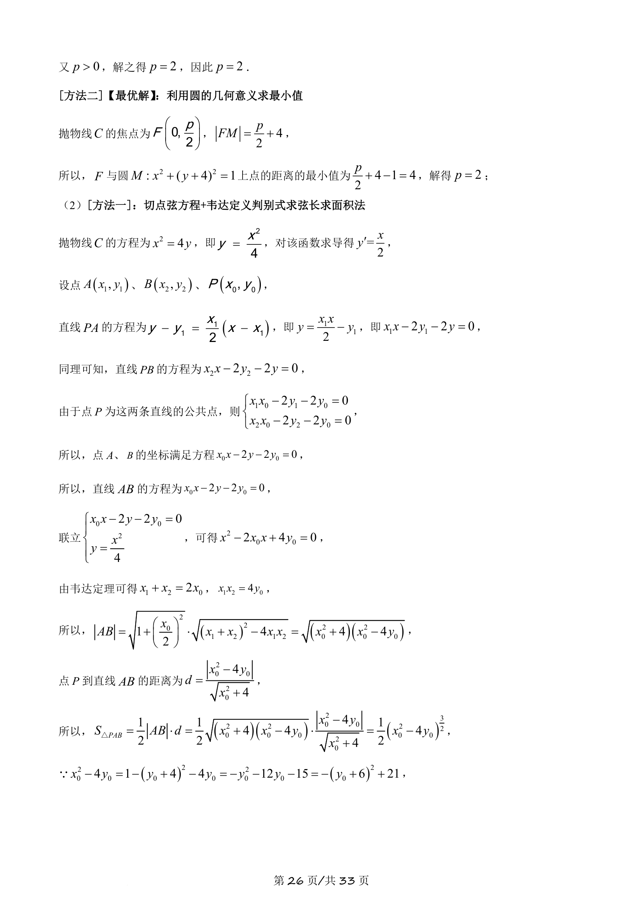
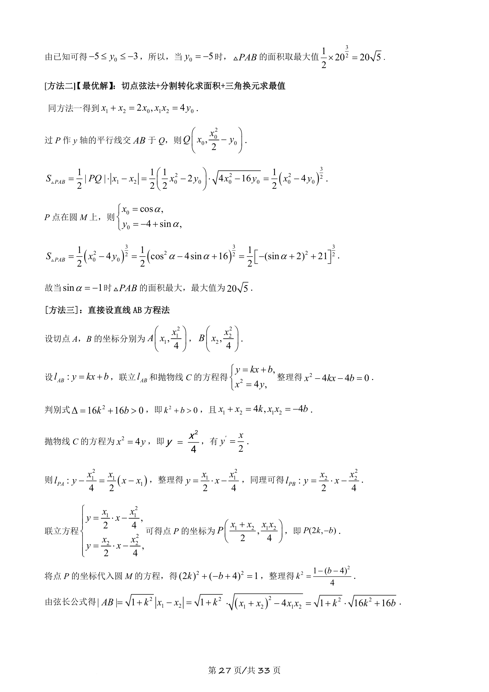
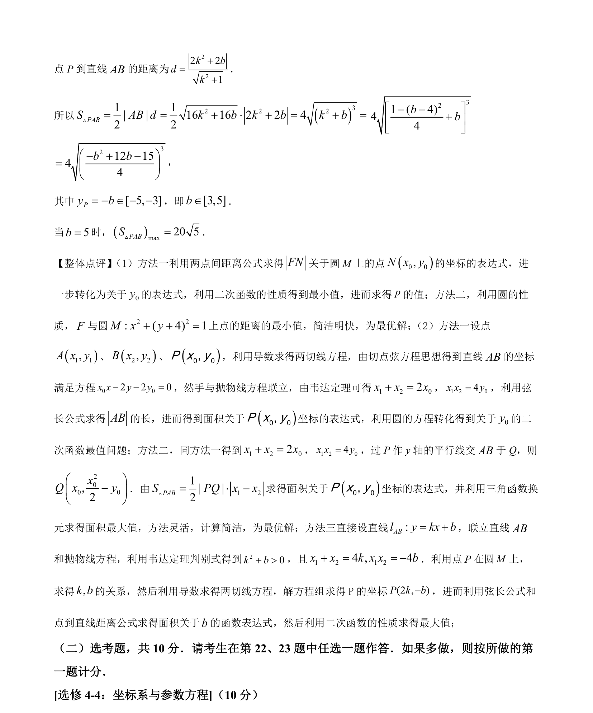

考点：抛物线 圆方程 切线 二次函数最值

本题通过抛物线与圆的位置关系求参数，并计算切线构成的三角形面积的最大值。




📄 原 PDF 第 25 页：
素材/真题/吉林/2008-2024·（吉林）数学高考真题/2021年高考数学试卷（理）（全国乙卷）（新课标Ⅰ）（解析卷）.pdf
【答案】 （1）2p=； （2）20 5. 【解析】 【分析】 （1）根据圆的几何性质可得出关于p的等式，即可解出p的值； （2）设点1 1,A x y、2 2,B x y、0 0,P x y，利用导数求出直线PA、PB，进一步可求得直线AB的 方程，将直线AB的方程与抛物线的方程联立，求出AB以及点P到直线AB的距离，利用三角形的面积 公式结合二次函数的基本性质可求得PABV面积的最大值. 【详解】 （1）[方法一]：利用二次函数性质求最小值 由题意知，0,2pFæ öç ÷è ø ，设圆 M 上的点0 0,N x y，则220 04 1+ + =x y． 所以220 0 01 4 5 3= - + - £ £ -x y y． 从而有 220 0| |2æ ö= + - =ç ÷è øpFN x y2220 0 01 4 ( 8) 152 4æ ö- + + - = - + - +ç ÷è øp py y p y． 因为 05 3y- £ £ -，所以当03y= -时， 2min| | 3 9 44= + + =pFN p．